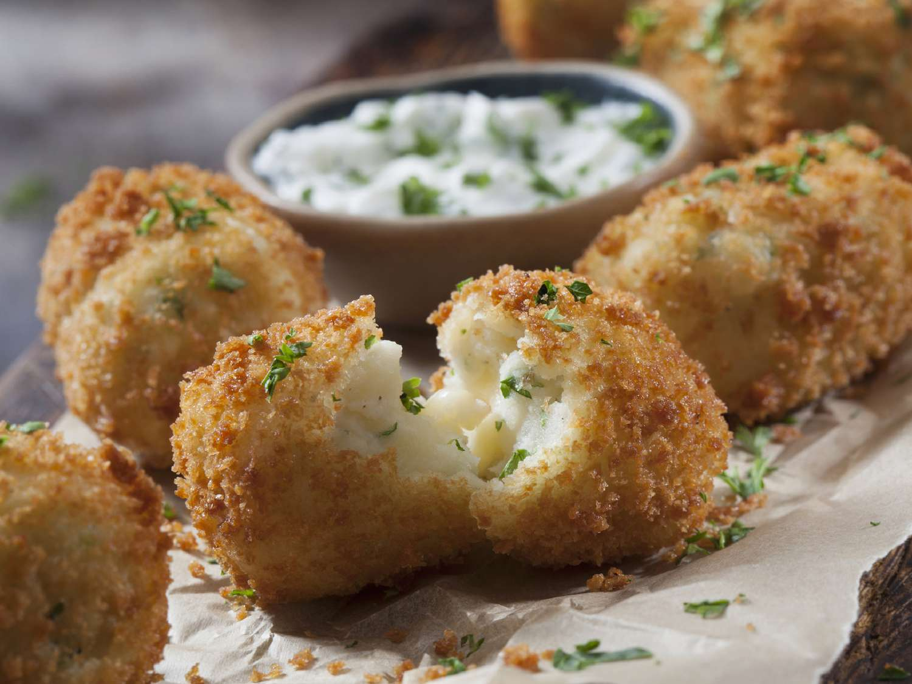

HOME

STUFF MADE WITH POTATO!?!?!?!??!!!?!??!?!?!??!?!?
| FOOD | IMAGE | DESCRIPTION |
|---|---|---|
| BAKED POTATO |  |
A whole potato baked for it to be crispy on the outside, and soft & fluffy on the inside. |
| POTATO CHIP | A thin slice of potato that has been deep fried, baked, air fried until crispy. It is also called a potato crisp by some people. | |
| CROQUETTE |  | A deep-fried roll consisting of a thick binder combined with a filling, which is then breaded. The binder has mashed potatoes on it. :) |
| FRENCH FRIES |  |
Can be simply called "fries." These are potato cut into strips, and is then deep-fried. These holy artifacts originate in France lmao. |
| GERMAN FRIES | Fairly sliced raw or cooked potatoes fried in fat, like lard, butter or veggie oil. In my perspective, it's french fry's unpopular cousin. | |
| HASH BROWNS | A popular AMERICAN breakfast dish consisting of finely julienned potatoes that have been fried until it's golden brown. | |
| MASHED POTATO |  |
Made by mashing boiled or steamed potatoes, usually added with milk, butter, salt and pepper. Possibly the best potato dish. hehe |
| POTATO WEDGES |  |
Known as "jojos," irregular or bizarre wedge-shaped slices of potato, often large and unpeeled, and are either baked or fried. |
| POTATO BREAD | IT BREAD! but flour is POTATO FLOUR. Not BORING WHEAT FLOWER EWWWW | |
| POTATO VODKA | Vodka is commonly made from grains like corn, rice, and wheat. However, potato is a good option as any since vodka can be distilled from any agricultural product containing starch or sugar. |